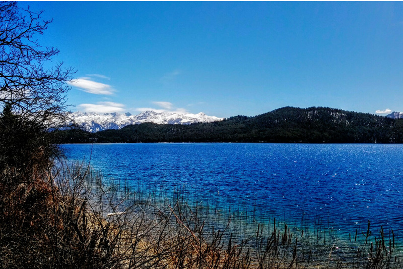

Star hotel is one of the modal hotel among the hotel of jumla district.it is located in karnali zone of jumla district it was esatablished in 2068 bs under the leadership of Hari Bahadur Dangi .Hotel star has its own identity and reputation among the the hotel of jumla district .Mainly hotel is popular for local government clerk as well as non goverment clerk.Hotel star also take order from goverment bodies Star hotl lies in karnali zone of jumla district it was established in 2010 AD. it offer various facilities including tranning hall,seminar hall well managed rooms and many more
Hotel star and resturant offered u all types of on the demand of customer. we try to served a best and affortable rooms. Hotel have single and double attached room including double and single bed.we 24hours electricity facility and wifi facility

Hotel have all types of hall depending upon the demand of customer.almost hotel have three types of hall on the demanding of peple they offereed hotel provide hall for seminar parties and wedding .hotel gurante that they also provide the 24 hours electric facilities and wifi .so we provide such a huge facilites on the rural region like jumla so it our responsible to full your and offered u a best facilites besides all of this hotel all provid u service facilites on own office and houses during seminar and tranning hotel tries to provide food and lodges facilites on hall during seminar almost three hall are in which among 300 people can be adjusted in single day .so it is great offered u to lunch such a tranning in a single hotel which is also easy for u
AS we know trasportant in karnali region is very difficult but we try to afford our best trasport facility. the hotel try to afford u a good facility of traspotation in every part of region ,we also have a treking guide so that it is easy for the foreign nd local tourist /we provide u our tourist guide up to rara and sheypoksundo lake
